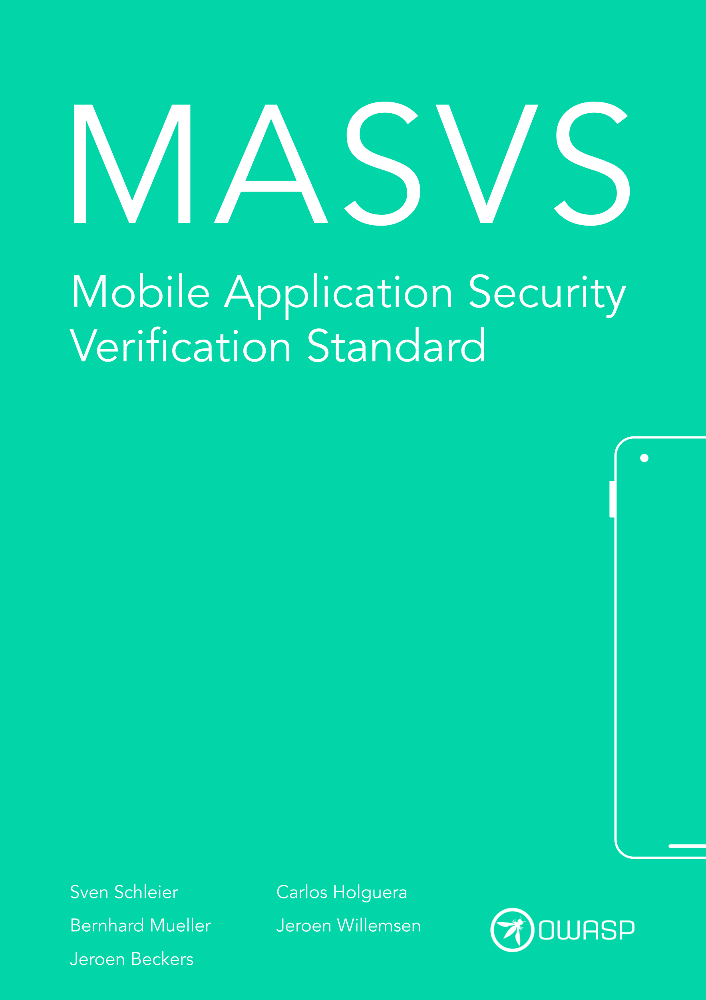
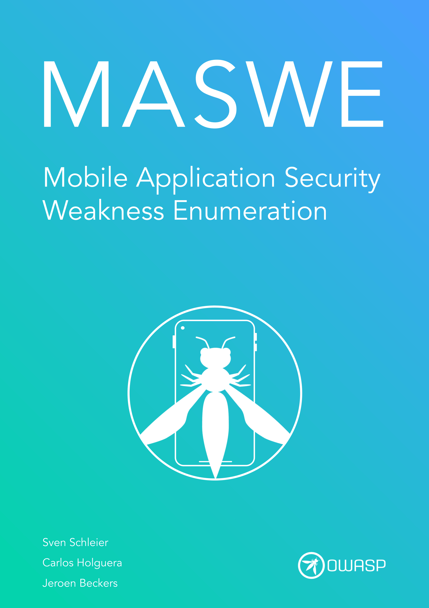
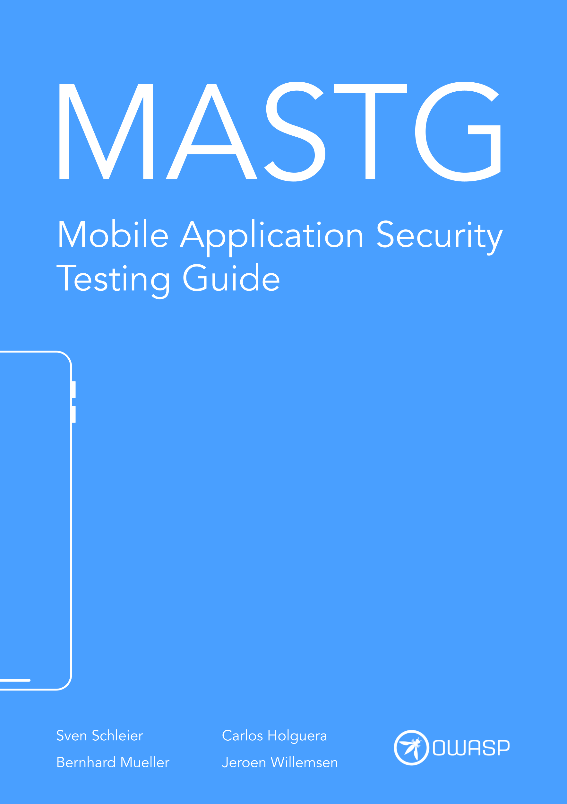

MASVS
8 control groups and 24 security controls. The baseline standard for defining what a secure mobile app must satisfy.

MASWE
119 concrete weaknesses mapped to MASVS controls and CWE. Use it as a checklist for threat modeling and gap analysis.

MASTG
Hands-on tests, tools, and techniques for Android and iOS security testing. V2 test cases across all MASVS profiles.
Quick Links — MASTG
TESTS
Android Tests
V2 Android test cases across all 8 MASVS categories and profiles.
TOOLS
Android Tools
Android-specific testing tools: JADX, Drozer, Objection, etc.
TESTS
iOS Tests
V2 iOS test cases across all 8 MASVS categories and profiles.
TOOLS
iOS Tools
iOS-specific testing tools: class-dump, Passionfruit, etc.
TOOLS
Generic & Network Tools
Cross-platform tools: Frida, MobSF, Burp Suite, Semgrep, nscurl.
TECH
Android Techniques
Step-by-step Android testing techniques with tooling references.